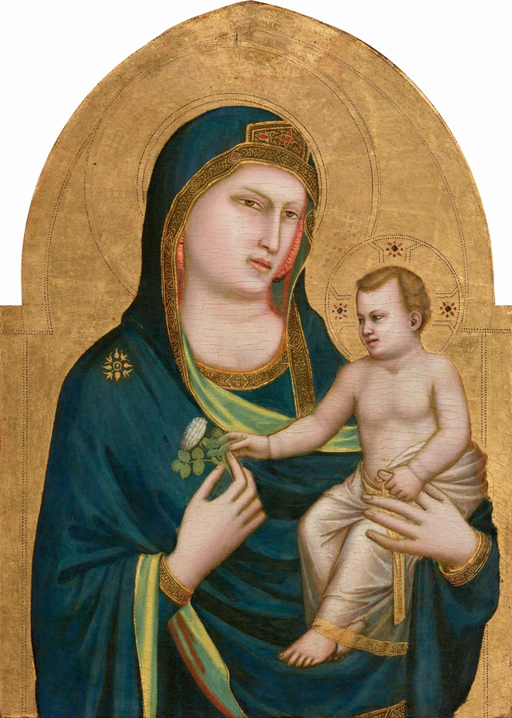
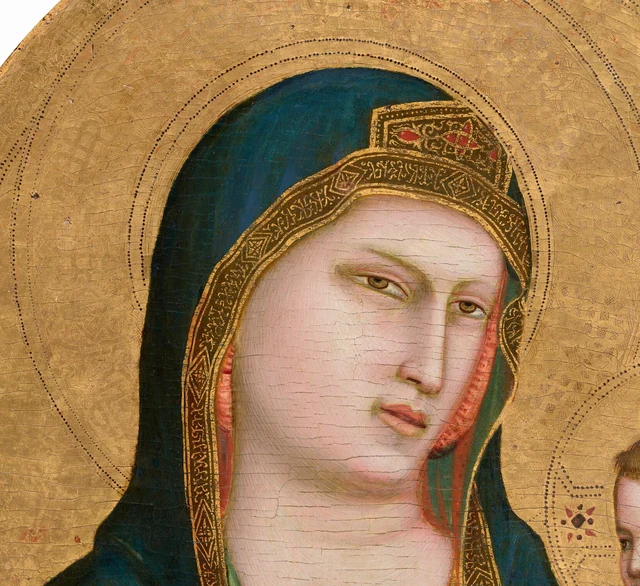
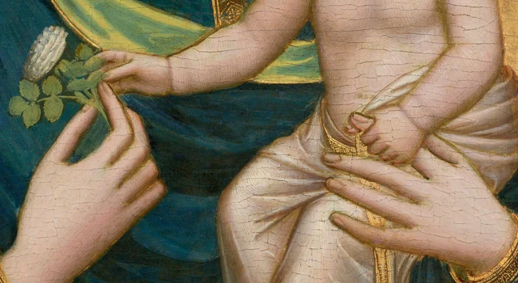
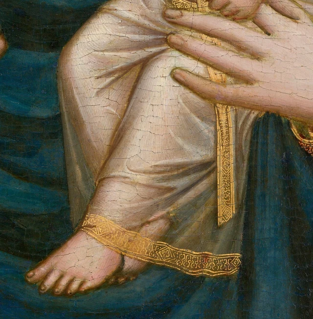

두 사람 뒤로 금빛이 가득하다. 그렇다고 모든 곳이 똑같이 밝지는 않다. 성모의 얼굴은 푸른 머리쓰개 사이로 비스듬히 드러나고, 코 옆과 턱에는 엷은 회녹색이 감돈다. 아이의 가슴과 배에도 명암이 있고, 팔은 꽃가지 쪽으로 뻗어 있다. 이제 머리 뒤를 보자. 금빛 후광은 얼굴과 함께 돌아가지 않는다. 둥근 모양도, 그 둘레에 나란히 찍힌 작은 점들도 여전히 우리를 정면으로 향한다.
이 그림에는 두 방향이 함께 있다. 몸은 방향을 바꾸지만, 후광과 금빛 바탕은 보는 사람을 향해 펼쳐져 있다.

이 글에서 살펴보려는 것은 조토가 만질 듯한 친근함을 엄숙한 성상의 모습 안에 담아낸 방식이다. 얼굴의 명암과 손가락 사이의 접촉은 성모와 아이를 가까이 다가갈 수 있는 존재처럼 느끼게 한다. 금빛 바탕, 후광, 옷 가장자리의 장식은 그 친근함이 우리 앞에 펼쳐진 성상의 일부로 남도록 한다. 두 효과가 함께 이 그림의 힘을 만든다.
작품은 14세기 초 이탈리아 회화의 세계에서 나왔다. 당시 목판에 그린 성상은 다른 그림판, 틀과 결합해 제단화를 이루며 기도와 전례에 쓰일 수 있었다. 이 그림판도 여러 폭으로 된 제단화의 중앙에 있었을 가능성이 높다. 다만 원래의 구성과 구체적인 설치 장소에는 여전히 논쟁이 있다. 오늘날 따로 떼어 보는 우리에게는 원래의 쓰임을 조금 상상하는 일과, 없는 증거를 없는 채로 남겨두는 일이 모두 필요하다. NGA 학술 도록, 제단화의 용도
1 금빛은 어떻게 하나의 장소가 되는가
먼저 푸른 옷을 입은 인물의 바깥 윤곽을 보자. 머리 위에서 파랑은 둥글게 솟고, 어깨를 따라 양옆으로 퍼지며, 아래쪽에서는 넓은 천이 화면을 거의 채운다. 그 윤곽을 따라 남은 금빛의 폭은 곳곳에서 달라진다. 위쪽에서 가장 넓고 어깨 옆에서 좁아지다가, 아이의 머리 주위에 다시 눈에 띄는 금빛 면을 이룬다. 인물의 크기와 간격은 우선 파랑과 금빛이 맞닿는 곳에서 분명해진다.
여기에는 수평선도, 점점 뒤로 물러나는 벽도 없다. 눈이 먼 곳으로 따라갈 길을 찾을 수 없다. 그렇지만 풍경이 없다고 해서 화면의 질서까지 사라진 것은 아니다. 성모 머리 뒤의 큰 원, 아이 머리 뒤의 작은 원, 그림판 위쪽 외곽을 따라 이어지는 장식 띠가 여러 겹으로 맞물린 형태를 이룬다. 두 얼굴은 그 안에서 자리를 얻는다. 아이의 후광에 들어 있는 십자형 장식은 같은 금빛 속에서도 아이의 신성한 정체를 따로 알아보게 한다.
흥미로운 것은 원이 얼굴의 각도를 따르지 않는다는 점이다. 성모는 아이 쪽으로 머리를 조금 기울였고, 콧대와 눈 주위의 움푹한 곳에서는 얼굴의 면이 돌아가는 차이가 보인다. 그 뒤의 후광은 여전히 넓은 원형 면을 우리에게 펼쳐 보인다. 아이도 화면 왼쪽을 보지만, 후광의 장식은 우리를 향해 온전히 드러난다. 머리에는 방향의 변화가 생기고, 성상의 표지는 정면에서 또렷하게 제시된다. 화가는 몸이 만드는 공간과 도상을 알아보기 쉽게 하는 일을 함께 다루고 있다.
금빛 바탕에도 고유한 세부가 있다. 후광 가장자리의 작은 점 두 줄은 멀리서 보면 가느다란 선으로 이어지고, 가까이서 보면 점 사이의 간격이 드러난다. 원 안쪽과 바깥 장식 띠에는 가늘고 복잡하게 얽힌 새김선도 있다. NGA의 기술 연구에 따르면 복잡한 문양은 손으로 직접 선을 새겨 만들었고, 둘레의 점들은 눌러 찍어 만들었다. 새김선은 선을 길게 뻗어나가게 하고, 점의 배열은 경계에 촘촘한 박자를 준다. 기술 요약과 주 9
그렇게 금빛 면에 두 가지 리듬이 생긴다. 큰 원은 금세 알아볼 수 있고, 작은 문양은 천천히 살펴볼 여지를 준다. 같은 금빛이 멀리서도 선명한 윤곽을 만들면서, 가까이에서야 드러나는 손길도 품고 있다.

원작의 금박은 그림판에 비치는 빛을 직접 받아낸다. 금박 바탕 그림에서는 표면을 다듬고 광을 내는 방식, 새김선, 눌러 찍은 점에 따라 빛이 반사되는 양상이 달라질 수 있다. 이는 이 재료와 기법의 중요한 성질이다. 목판 그림의 제작 과정 반면 얼굴의 밝음과 어둠은 이미 물감으로 배치되어, 솟은 콧대와 돌아가는 뺨의 면을 보여준다. 하나는 그림 밖의 빛에 반응하고, 다른 하나는 형체 위의 빛을 그린다.
사진은 어느 한 번의 조명 아래에서 생긴 반사를 고정한다. 문양을 자세히 볼 수는 있지만, 화면을 기울여 원작 금빛 표면의 변화를 재현할 수는 없다. 이 한계를 의식하면 오히려 금빛 바탕의 역할이 더 분명해진다. 그것은 화가가 풍경을 그릴 수 있게 되기를 기다리는 빈자리가 아니다. 금빛 바탕은 그림판을 빛나는 하나의 물건으로 관람자 앞에 내놓으며, 인물들에게 일상의 실내와는 다른 장소를 마련해 준다.
2 장식 사이에서 돌아 나오는 얼굴
성모의 이마 위로 촘촘한 문양이 든 금빛 테두리가 둘러져 있다. 머리쓰개를 따라 휘고 양옆으로 내려오는 장식은 얼굴에 좁은 틀을 둘러놓은 듯하다. 뺨 바로 옆에는 안쪽에 쓴 붉은 머리덮개가 가느다랗게 드러난다. 파랑, 금빛, 빨강 사이의 경계는 뚜렷하다. 그에 비해 얼굴의 색은 훨씬 완만하게 이어진다.
화면 왼쪽에 보이는 뺨을 보자. 광대뼈 부근의 옅은 분홍에서 턱의 회녹색으로 이어지는 사이에는 머리쓰개 가장자리처럼 단단한 경계가 없다. 콧대는 밝고 콧방울 아래에는 짙은 색이 모인다. 윗눈꺼풀에는 붉은 기가, 눈썹 아래와 눈 안쪽 모서리에는 녹색을 띤 어둠이 있다. 이런 차이들이 얼굴 각 부분의 방향을 드러낸다. 특히 입술이 그렇다. 윗입술은 어둡고 아랫입술은 조금 밝으며, 그 사이에 아주 가느다란 짙은 선이 남아 입이 살짝 벌어진 듯 보인다.
두 사람의 눈길도 따로 살펴볼 만하다. 성모는 머리를 아이 쪽으로 기울였지만, 눈은 그림 밖을 향해 관람자를 맞이하는 정면성을 남겨둔다. 아이의 눈은 화면 왼쪽으로 쏠리고, 눈썹과 눈꺼풀의 짧은 선들이 그 방향을 더 뚜렷하게 한다. 아이의 작은 얼굴은 어머니의 긴 타원형을 그대로 줄여놓은 모양이 아니다. 턱은 더 짧고 뺨은 더 둥글며, 머리 옆으로 귀가 드러난다. 반복되는 후광은 둘을 한 쌍으로 묶고, 얼굴의 비례와 눈길은 각자의 차이를 보여준다.
그래서 우리의 눈도 두 가지 속도로 움직인다. 머리쓰개 가장자리에서는 분명한 선을 따라가고, 얼굴 안으로 들어가면 미세한 색 차이를 살핀다. 성모는 안정되어 보이지만 굴곡 없는 가면이 되지는 않는다.
기술 연구는 이 차이가 어떻게 만들어졌는지 이해하게 해준다. 목판에는 흰 석고 바탕층이 있고, 피부 부분에는 먼저 녹색 밑칠이 놓였다. 그 위에서 가는 평행선과 더 넓은 붓질로 그림자를 조직하며 물감을 얇게 겹쳤다. 템페라로도 이렇게 복잡한 살빛의 변화를 만들 수 있다. NGA 기술 요약 지금 보이는 녹색 기운은 눈여겨볼 만하다. 다만 이 사진만으로 어느 곳에서 밑칠이 드러나고, 어느 곳이 나중의 마모와 관련되는지를 판정할 수는 없다.
얼굴의 입체감은 몸 전체를 감싼 옷과도 서로 받쳐준다. 푸른 겉옷은 가슴 앞에서 접혀 황록색 안감을 드러내고, 그 안감은 아이가 꽃 쪽으로 뻗은 팔 아래를 비스듬히 이어간다. 넓은 짙은 파랑 속에 밝게 꺾이는 부분이 생겨 머리, 가슴, 꽃, 팔이 연결된다. 아래로 내려가면 푸른 천의 주름은 넓고 어두워지면서 더 큰 접힌 면들로 모인다. 금빛 가장자리가 그 사이를 지나며 굴곡 있는 천의 표면을 다시 섬세한 장식과 잇는다.
이렇게 보면 그림 속의 ‘사실성’은 일상과 닮게 그린다는 말보다 풍부하다. 얼굴에 명암이 생겼다고 금빛 테두리가 사라지지 않고, 옷에 접힌 면이 드러났다고 문양이 없어지지 않는다. 머리가 방향을 바꾼다고 느끼는 일과, 응시하도록 마련된 성상이 눈앞에 있음을 아는 일이 한 번의 감상 안에서 일어난다.
3 꽃과 손가락과 얇은 천
화면 아래 절반에서 가장 활발하게 이어지는 시선의 길은 흰 꽃에서 시작된다.
꽃은 커다란 둥근 덩어리로 활짝 피지 않고 위쪽으로 오므라져 있다. 몇 줄의 흰 붓질이 푸른 옷에 겹쳐지고, 그 옆으로 초록 잎이 펼쳐진다. 성모는 오른손으로 꽃줄기를 가볍게 집는다. 손가락은 길고 손끝은 위로 들려 있다. 아이가 뻗은 오른손은 옆으로 열려 잎에 가까이 다가간다. 두 동작이 짧은 가지와 잎을 향해 모인다. 한 손은 건네고 다른 손은 더듬어 받으려 한다. 꽃은 그 사이에서 주고받을 수 있는 것이 된다.
동시에 아이의 다른 손도 가만히 있지 않다. 허리께에서 자신을 받치고 있는 어머니 왼손의 검지를 쥔다. 어머니가 길게 편 손가락을 따라가면 아이가 오므린 작은 손을 찾을 수 있다. 큰 손은 펼쳐져 있고, 작은 손은 손가락을 감싸 쥔다. 두 손은 크기도 방향도 벌어진 정도도 다르다. 이 접촉이 껴안는 몸의 윤곽보다 더 구체적으로 다가오는 것은, 화가가 ‘어떻게 닿는지’까지 그렸기 때문이다.

이 두 접점은 화면의 빈틈도 바꾼다. 아이가 뻗은 팔 아래에는 길고 좁은 짙은 파랑이 남는다. 꽃을 든 어머니의 손과 아이를 받치는 손 사이에는 더 넓은 푸른 옷자락이 놓인다. 밝은 살빛이 짙은 파랑 앞에서 선명하므로, 주변에 다른 물건을 놓아 동작을 설명할 필요가 없다. 금빛 바탕의 성모자상은 이렇게 놓인 팔과 손가락 사이에서 일상 경험으로 이해할 수 있는 친밀함을 얻는다.
흰 장미에는 종교적 의미도 있다. 미술관의 작품 설명은 장미를 성모의 순결과 연결한다. 학술 도록은 장미가 성모를 《아가》, 그리고 그리스도의 신부로서의 교회와 이어줄 수 있다는 점도 짚는다. 작품 설명, 도상에 관한 논의 이 그림에서 상징은 꽃의 만질 듯한 성질을 지우지 않는다. 아이가 손을 내밀어 닿으려 하기에, 상징인 꽃도 두 사람의 주고받는 움직임 속으로 들어온다.
눈은 아이의 몸을 따라 더 아래로 내려갈 수 있다. 가슴과 배는 대부분 드러나 있고, 허리에는 얇은 흰 천이 감겨 있다. 어머니의 손가락 가까이에서는 천의 주름이 모여 가늘고 가파른 어두운 선을 만든다. 무릎 쪽으로 펼쳐지면 밝은 면이 넓어지고 그림자의 변화도 완만해진다. 천은 몸을 감싸면서도 안쪽의 굴곡을 완전히 감추지 않는다. 우리는 여전히 솟은 무릎을 따라 정강이로 내려가, 마지막에 밖으로 나온 발을 찾을 수 있다.
발가락은 하나씩 나란히 놓이고 그 사이에는 가는 어두운 선이 있다. 발등은 발끝보다 밝다. 발이 마침 짙은 파랑 위로 나와 있어, 아래쪽에 작게 드러난 살도 선명하게 보인다. 위쪽에는 얼굴과 가슴, 배의 넓은 피부가 있고, 아래쪽에는 작은 발 하나만 남는다. 흰 천은 두 부분을 갈라놓으면서도 다리의 방향을 따라 다시 이어준다.

그런데 이 얇은 천에도 장식이 뚜렷한 금빛 테두리가 있다. 아래쪽으로 가로질러 가다가 방향을 꺾고, 또 다른 가장자리를 따라 아래로 늘어진다. 피부와 천의 주름, 금빛 문양이 이렇게 가까이 붙어 있다는 점은 이 그림을 ‘살아 있는 사람의 부분’과 ‘옛 양식의 부분’으로 나누기 어려운 이유를 잘 보여준다. 아이의 발은 몸을 실감하게 하고, 금빛 가장자리는 옷을 귀하고 엄숙하게 보이게 한다. 두 효과는 같은 천의 가장자리에서 만난다.
어머니와 아이의 얼굴은 과장되게 맞닿아 있지 않다. 친밀함은 주로 작은 손짓으로 펼쳐진다. 위쪽의 비교적 여유 있게 놓인 얼굴과 후광은 관람자를 향한 모습을 유지한다. 이 배분은 정확하다. 온몸이 하나의 강한 동작에 휩쓸렸다면 꽃과 손끝의 세부를 이토록 분명히 볼 수 없었을 것이다. 모든 곳이 똑같이 멈춰 있었다면, 진행 중인 두 접촉도 생겨나지 않았을 것이다.
4 오늘 우리 앞에 남은 그림판
이 그림판의 채색 면은 높이가 85cm를 조금 넘는다. 손안에 쥘 수 있는 작은 성상도, 보는 사람을 둘러쌀 만큼 거대한 벽화도 아니다. 반신으로 그린 성모가 면적의 대부분을 차지하고, 아이는 그 앞, 화면 오른쪽으로 치우친 자리에 놓인다. 두 사람의 손과 아이의 발은 모두 화면 아래 절반에 가깝다. 이 배치는 쉽게 알아볼 수 있는 얼굴과 후광, 작은 동작들을 정면으로 내보일 수 있는 하나의 물건 안에 모아놓는다.
아마 제단화의 중앙 그림판이었으리라는 점을 알면 이런 집중이 이해된다. 제단화 앞의 관람자는 중심인물을 알아볼 수 있어야 한다. 금빛 바탕, 커다란 파랑의 형태, 후광이 분명한 구성을 마련한다. 거기서 더 머물면 얼굴과 손을 따라가며 어머니와 아이 사이의 주고받는 움직임을 살필 수 있다. 그렇다고 당시 모든 사람이 같은 속도로 감상했다고 가정할 필요는 없다. 원래 그림에서 얼마나 떨어져 보았는지, 빛이 어디서 왔는지도 확정할 수 없다.
오늘 보이는 외형을 그대로 원래 제단화의 설계도로 삼을 수도 없다. 이 판은 얇게 깎였고, 위쪽 가장자리가 다듬어졌으며, 뒷면에 있던 정보도 손실되었다. NGA 연구는 따로 남아 있는 측면 그림판들과의 관계를 검토하지만, 그 조합은 아직 완전히 확정되지 않았다. 원래 놓였던 곳으로도 산타 크로체 성당과 오니산티 성당 등 여러 장소가 제안되어 있다. 작품의 이력과 원래 구성의 복원 문제
이 이력은 구체적으로 한 가지 시선을 바꾼다. 위쪽 장식과 현재 남은 가장자리의 관계는 오늘 보이는 상태로 설명할 수 있지만, 모두 조토가 처음 구상한 완전한 설계로 돌릴 수는 없다. 한편 측면 그림판을 잃었다고 해서 지금의 그림을 감상할 길까지 없어지는 것은 아니다. 성모와 아이 사이의 관계는 여전히 분명하다. 큰 금빛 원과 작은 금빛 원, 짙은 파랑과 밝은 피부, 꽃을 향해 뻗는 손과 손가락을 굽혀 쥔 손, 얇은 천의 접힌 면과 정교한 금빛 테두리가 남아 있다.
이 글이 가장 오래 바라보고 싶은 것은 서로 다른 요구를 이처럼 조화시킨 방식이다. 조토는 인물에게 우리가 몸의 경험으로 이해할 수 있는 동작을 주면서, 그 동작이 명료하고 장엄한 성상의 모습 안에 머물게 한다. 금빛 바탕은 사람을 도상 쪽으로 향하게 하고, 손가락과 꽃은 거기서 더 머물고 싶게 한다. 친근함이 성상의 엄숙함을 약화하지 않는다. 오히려 그 엄숙함에 눈으로 보고 만질 듯 느낄 수 있는 내용을 채워준다.
더 읽기 SAE로 물건의 내력을 살펴보기
아래는 SAE를 빌린 오늘날의 감상 연습이며, 이를 근거로 조토의 의도나 그림 속 인물의 마음을 추정하지 않는다.
이번에는 ‘인과의 아름다움’에서 출발할 수 있다. 이 관점이 묻는 것은 이미 일어난 일이 뒤에 남은 물건 속에 어떻게 머물며, 그 내력이 어떻게 알아볼 수 있는 형태가 되는가이다. 오래된 느낌을 좋아하는 것과 어떤 흔적이 어떻게 남았는지 살피는 것은 다른 일이다. SAE 미학 총론, 인과의 아름다움
먼저 그림 2에서 서로 다른 선 두 가지를 찾아보자. 하나는 질서 있게 늘어선 작은 점들로 이루어져 후광을 따라 휜다. 다른 하나는 얼굴과 옷의 경계를 따르지 않고 가늘게 뺨을 가로지른다. 앞의 선은 제작 때 더한 장식이고, 뒤의 선은 지금 표면에 보이는 균열이다. 둘을 모두 ‘오래된 질감’이라고 부르면 서로 다른 두 내력이 지워진다.
다음으로 확인할 수 있는 질문 두 개를 적어보자. 점들은 왜 원의 곡선을 따라 나란히 놓였는가? 균열은 다른 색을 지날 때도 이어지는가? 첫 질문은 기술 기록과 함께 살펴보면 금박 바탕의 경계를 조직한 제작 방식으로 거슬러 올라갈 수 있다. 둘째 질문은 물감으로 그린 얼굴이 동시에 시간을 겪은 물질 표면이라는 점을 돌아보게 한다. 사진만으로 균열 하나하나의 연대를 매기거나 특정 손상을 어느 한 번의 복원 작업 탓으로 돌릴 수는 없다.
이 연습의 소득은 구체적이어야 한다. 온통 ‘금빛으로 찬란하다’고 보던 곳에서 이제 제작, 존속, 변화의 차이가 드러난다. 더 나아가 이 흔적들 때문에 작품이 더 아름다워졌다고 말하려면, 눈에 보이는 어떤 앞뒤의 관계가 그 판단을 뒷받침하는지도 밝혀야 한다. 금박이 닳는다고 저절로 아름다움이 늘지는 않으며, 복원의 가치도 낡고 얼룩진 모습을 좋아하는 취향만으로 정할 수 없다. 여기서 SAE가 돕는 것은 막연한 감탄을 이 물건의 내력에 책임 있게 주의를 기울이는 감상으로 바꾸는 일이다.
이미지와 자료에 관하여
이 글은 미국 국립미술관이 제공한 2924×4096픽셀 이미지를 바탕으로 전체와 세 부분을 실제로 살펴보고 작성했다. 전체 이미지는 내려받은 파일 그대로 두었고, 세부 이미지는 직사각형으로 자르기만 했다. 해당 부분의 원래 픽셀과 ICC 색상 프로필을 유지했으며, 색 조정, 선명도 보정, 복원, 덧그리기, 생성형 내용 추가는 하지 않았다. 디지털 이미지는 원작 금빛 표면의 반사를 온전히 보여줄 수 없다.
이미지는 NGA의 CC0 개방 정책에 따라 사용했다. 이 허용 범위가 미술관의 해설이나 연구 글을 자유롭게 전재할 수 있다는 뜻은 아니다. 이 글의 시각적 판단과 서술은 독자적으로 작성했고, 역사적 사실과 기술 자료에는 별도로 링크를 달았다. 글의 해석은 미술관의 보증이나 공식 견해를 뜻하지 않는다. 자세한 사항은 참고 자료와 이미지 기록을 참조할 수 있다.